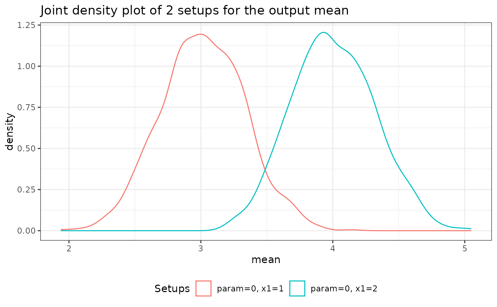
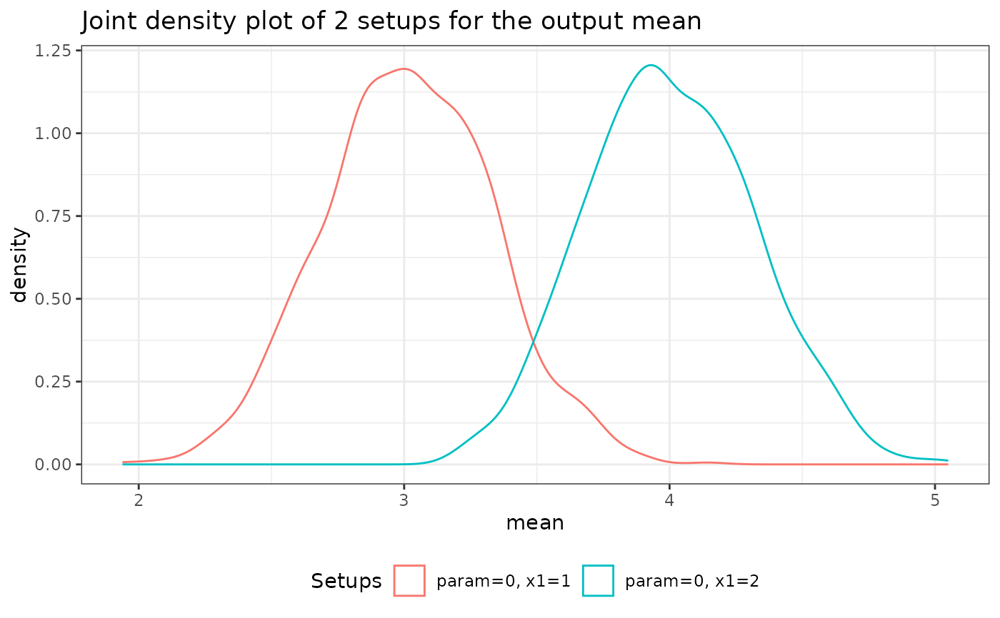

Plot density plots for numeric results and bar plots for non-numeric results
of a Monte Carlo Simulation run by future_mc().
Usage
# S3 method for class 'mc'
plot(
x,
join = NULL,
which_setup = NULL,
parameter_comb = NULL,
plot = TRUE,
...
)Arguments
- x
An object of class
mc, for which holdssimple_output = TRUE. See value offuture_mc().- join
A character vector containing the
nice_namesfor the different parameter combinations (returned byfuture_mc()), which should be plotted together. Default: Each parameter combination is plotted distinctly.- which_setup
A character vector containing the
nice_namesfor the different parameter combinations (returned byfuture_mc()), which should be plotted. Default: All parameter combinations are plotted.- parameter_comb
Alternative to
which_setup. A named list whose components are named after (some of) the parameters inparam_listinfuture_mc()and each component is a vector containing the values for the parameters to filter by. Default: All parameter combinations are plotted.- plot
Boolean that specifies whether the plots should be printed while calling the function or not. Default:
TRUE- ...
ignored
Value
A list whose components are named after the outputs of fun
and each component
contains an object of class ggplot and gg
which can be plotted and modified with the
ggplot2::ggplot2 functions.
Details
Only one of the arguments join, which_setup, and paramter_comb
can be specified at one time.
Examples
test_func <- function(param = 0.1, n = 100, x1 = 1, x2 = 2){
data <- rnorm(n, mean = param) + x1 + x2
stat <- mean(data)
stat_2 <- var(data)
if (x2 == 5){
stop("x2 can't be 5!")
}
return(list(mean = stat, var = stat_2))
}
param_list <- list(param = seq(from = 0, to = 1, by = 0.5),
x1 = 1:2)
set.seed(101)
test_mc <- future_mc(
fun = test_func,
repetitions = 1000,
param_list = param_list,
n = 10,
x2 = 2
)
#> Running single test-iteration for each parameter combination...
#>
#> Test-run successfull: No errors occurred!
#> Running whole simulation: Overall 6 parameter combinations are simulated ...
#>
#> Simulation was successfull!
#> Running time: 00:00:00.853826
returned_plot1 <- plot(test_mc)
 returned_plot1$mean +
ggplot2::theme_minimal() +
ggplot2::geom_vline(xintercept = 3)
returned_plot2 <- plot(test_mc,
which_setup = test_mc$nice_names[1:2], plot = FALSE)
returned_plot2$mean
returned_plot3 <- plot(test_mc,
join = test_mc$nice_names[1:2], plot = FALSE)
returned_plot3$mean

returned_plot1$mean +
ggplot2::theme_minimal() +
ggplot2::geom_vline(xintercept = 3)
returned_plot2 <- plot(test_mc,
which_setup = test_mc$nice_names[1:2], plot = FALSE)
returned_plot2$mean
returned_plot3 <- plot(test_mc,
join = test_mc$nice_names[1:2], plot = FALSE)
returned_plot3$mean
